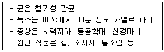

제과기능사 (2002-01-27 기출문제)
1과목: 제조이론
1. 다음의 제품에서 크림법을 사용하여 만들 수 있는 제품은?
- 슈
- 마블 파운드 케이크
- 버터 스펀지 케이크
- 엔젤 푸드 케이크
(정답률: 75%)

2. 비스킷 반죽을 오랫동안 믹싱할 때 일어나는 현상이 아닌 것은?
- 제품의 크기가 작아진다.
- 제품이 단단해진다.
- 제품이 부드럽다.
- 성형이 어렵다.
(정답률: 63%)
3. 고율배합 제품과 저율배합 제품의 비중을 비교해 본 결과 일반적으로 맞는 것은?
- 고율배합 제품의 비중이 높다.
- 저율배합 제품의 비중이 높다.
- 비중의 차이는 없다.
- 제품의 크기에 따라 비중은 차이가 있다.
(정답률: 80%)
4. 퍼프 페이스트리(puff pastry) 제조시 굽기과정에서 부풀어 오르지 않는 이유로 틀린 것은?
- 밀가루의 사용량이 증가되었다.
- 오븐이 너무 차다.
- 반죽이 너무 차다.
- 품질이 나쁜 계란이 사용되었다.
(정답률: 82%)
5. 오믈렛(Omelette)에 충전할 수 없는 것은?
- 딸기
- 생크림(휘핑크림)
- 바나나
- 전분
(정답률: 87%)
6. 화이트 레이어 케이크 (White layer cake) 제조시 주석산 크림을 사용하는 목적 중 틀린 것은?
- 흰자를 강하게 하기 위하여
- 껍질색을 밝게 하기 위하여
- 속색을 하얗게 하기 위하여
- 제품의 색깔을 진하게 하기 위하여
(정답률: 66%)
7. 푸딩을 제조할 때 경도의 조절은 어떤 재료에 의하여 결정되는가?
- 우유
- 설탕
- 계란
- 소금
(정답률: 89%)
8. 초콜릿을 템퍼링(Tempering)할 때 처음 녹이는 공정의 온도 범위에 적합한 것은?
- 30 –32℃
- 38 -40℃
- 45 –47℃
- 52 -54℃
(정답률: 75%)
9. 옐로우 레이어케이크에서 설탕 120%, 유화쇼트닝 50%를 사용한 경우 우유 사용량은?
- 60%
- 70%
- 80%
- 90%
(정답률: 45%)
10. 전통적인 퍼프 페이스트리의 기본 배합율로, 강력분:유지:냉수:소금의 비율로 가장 적당한 것은?
- 100:100:50:1
- 100:50:100:1
- 100:50:50:1
- 100:50:25:1
(정답률: 81%)
11. 정형한 파이 반죽에 구멍자국을 내주는 가장 주된 이유는?
- 제품을 부드럽게 하기 위해
- 제품의 수축을 막기 위해
- 제품의 원활한 팽창을 위해
- 제품에 기포나 수포가 생기는 것을 막기 위해
(정답률: 91%)
12. 케이크 도넛에 대두분을 사용하는 목적이 아닌 것은?
- 흡유율 증가
- 껍질 구조 강화
- 껍질색 강화
- 식감 의 개선
(정답률: 75%)
13. 다음 제과용 포장재료로 알맞지 않는 것은?
- P.E(Poly ethylene)
- O.P.P(Oriented Poly propyrene)
- P.P(Poly propyrene)
- 일반 형광종이
(정답률: 97%)
14. 과자제품의 평가시 내부적 평가 요인으로 알맞지 않은 것은?
- 맛
- 방향
- 기공
- 부피
(정답률: 77%)
15. 파운드 케이크 반죽을 팬에 넣을 때 적당한 팬닝비(%)는?
- 50%
- 55%
- 70%
- 100%
(정답률: 90%)
16. 우유 2,000g을 사용하는 식빵반죽에 전지분유를 사용하고자 할 때 분유와 물의 사용량으로 적정한 것은?
- 분유 100g,물 1,900g
- 분유 200g,물 1,800g
- 분유 400g,물 1,600g
- 분유 600g,물 1,400g
(정답률: 85%)
17. 불란서 빵 제조시 반죽을 일반빵에 비해서 적게 하는 이유는?
- 질긴 껍질을 만들기 위해서
- 팬에서의 흐름을 막고 모양을 좋게 하기 위해서
- 자르기 할 때 용이하게 하기 위하여
- 제품을 오래 보관하기 위하여
(정답률: 75%)
18. 제빵시 팬기름의 조건으로 나쁜 것은?
- 낮은 발연점의 기름
- 무취의 기름
- 무색의 기름
- 산패되기 쉽지 않은 기름
(정답률: 91%)
19. 장시간 발효 과정을 거치지 않고 배합 후 정형하여 2차 발효를 하는 제빵법은?
- 재반죽법
- 스트레이트법
- 노타임법
- 스펀지법
(정답률: 89%)
20. 스펀지 발효의 발효점은 일반적으로 처음 반죽부피의 몇 배까지 팽창되는 것이 가장 적당한가?
- 1-2배
- 2-3배
- 4-5배
- 6-7배
(정답률: 64%)
2과목: 재료과학
21. 빵의 포장온도로 가장 적합한 것은?
- 15~20℃
- 25~30℃
- 35~40℃
- 45~50℃
(정답률: 83%)
22. 빵의 내부에 줄무늬가 생기는 원인이 아닌 것은?
- 과량의 분할유 사용
- 과량의 덧가루 사용
- 건조한 중간 발효
- 건조한 2차 발효
(정답률: 70%)
23. 스펀지법으로 제빵할 때 스펀지의 소맥분 변화를 시키는 경우에 설명이 부적당한 것은?
- 부피, 향, 저장성 등 품질을 개선시키고자 할 때
- 발효 시간을 변경할 필요가 있을 때
- 기계 및 설비를 감소시킬 때
- 소맥분의 품질이 변경되었을 때
(정답률: 79%)
24. 이스트가 오븐 내에서 사멸되기 시작하는 온도는?
- 40℃
- 60℃
- 80℃
- 100℃
(정답률: 66%)
25. 사용할 물온도를 구할 때 필요한 온도가 아닌 것은?
- 수돗물 온도
- 실내 온도
- 마찰 계수
- 밀가루 온도
(정답률: 67%)
26. 분할기에 의한 기계식 분할시 분할의 기준이 되는 것은?
- 무게
- 모양
- 배합율
- 부피
(정답률: 71%)
27. 액체 발효법에서 사용하는 소포제(anti forming agent)로 적당하지 않은 것은?
- 분유
- 쇼트닝
- 탄소수가 적은 지방산
- 실리콘화합물
(정답률: 50%)
28. 냉동 반죽을 2차 발효시키는 방법 중 가장 올바른 것은?
- 냉장고에서 15~16시간 냉장해동시킨 후 30~33℃, 상대습도 80%의 2차 발효실에서 발효시킨다.
- 실온(25℃)에서 30~60분간 자연 해동시킨 후 38℃, 상대습도 85%의 2차 발효실에서 발효시킨다.
- 냉동반죽을 30~33℃, 상대습도 80%의 2차 발효실에 넣어 해동시킨 후 발효시킨다.
- 냉동반죽을 38~43℃, 상대습도 90%의 고온다습한 2차 발효실에 넣어 해동시킨 후 발효시킨다.
(정답률: 82%)
29. 다음 중 생산의 목표는?
- 재고, 출고, 판매의 관리
- 재고, 납기, 출고의 관리
- 납기, 재고, 품질의 관리
- 공정, 원가, 품질의 관리
(정답률: 65%)
30. 대량생산 공장에서 많이 사용되는 오븐으로 반죽이 들어가는 입구와 제품이 나오는 출구가 서로 다른 오븐은?
- 데크오븐
- 터널오븐
- 로터리 래크오븐
- 컨벡션오븐
(정답률: 95%)
3과목: 영양학
31. 전분의 노화에 영향을 주는 요인과 가장 거리가 먼 것은?
- 전분의 종류
- 전분의 농도
- 당의 종류
- 염류 또는 각종 이온의 함량
(정답률: 71%)
32. 케이크 제조에서 쇼트닝의 기본적인 3가지 기능과 가장 거리가 먼 것은?
- 팽창기능
- 윤활기능
- 유화기능
- 안정기능
(정답률: 61%)
33. 우유를 살균하는 데는 여러 가지 방법이 있는데 고온 단시간 살균법으로서 가장 적당한 조건은?
- 72℃ 에서 15초 처리 후 냉각
- 75℃이상에서 15분 열처리
- 130℃ 에서 2-3초 이내 처리
- 62 -65℃에서 30분 처리
(정답률: 73%)
34. 흰자를 사용하는 제품에 주석산 크림이나 식초를 첨가하는 이유로 부적당한 것은?
- 알칼리성의 흰자를 중화함
- pH를 낮춤으로 흰자를 강력하게 함
- 풍미를 좋게 함
- 색깔을 희게 함
(정답률: 73%)
35. 케이크 제조에 있어 계란의 기능으로 부적당한 것은?
- 결합작용
- 팽창작용
- 유화작용
- 수분보유작용
(정답률: 69%)
36. 베이킹파우더가 반응을 일으키면 주로 발생되는 가스는?
- 질소가스
- 암모니아가스
- 탄산가스
- 산소가스
(정답률: 74%)
37. 제빵용 밀가루 선택시 고려할 사항과 가장 거리가 먼 것은?
- 단백질 양
- 흡수율
- 전분 양
- 회분 양
(정답률: 66%)
38. 포도당의 감미도는?
- 결정일 때 감미가 세다.
- 수용액일 때 감미가 세다.
- β-형일 때 감미가 세다.
- 좌선성일 때 감미가 세다.
(정답률: 76%)
39. 모노글리세라이드(monoglyceride)와 디글리세라이드(diglyceride)는 제과에 있어 주로 어떤 역할을 하는가?
- 유화제
- 항산화제
- 감미제
- 필수영양제
(정답률: 73%)
40. 과당이나 포도당을 분해하여 CO2 가스와 알코올을 만드는 효소는?
- 말타아제
- 인버타아제
- 프로테아제
- 찌마아제
(정답률: 84%)
41. 전분을 분해하는 효소는?
- 리파아제
- 아밀라아제
- 프로테아제
- 말타아제
(정답률: 73%)
42. 제과, 제빵용 건조재료 등과 팽창제 및 유지재료를 알맞은 배합율로 균일하게 혼합한 원료는?
- 프리믹스(prepared flour mixes)
- 팽창제(leavening agent)
- 향신료(flavors and spices)
- 밀가루 개선제(flour improvers)
(정답률: 80%)
43. 제빵시 경수를 사용할 때 조치사항이 아닌 것은?
- 이스트 사용량 증가
- 맥아 첨가
- 이스트푸드양 감소
- 급수량 감소
(정답률: 60%)
44. 이스트푸드의 역할이 아닌 것은?
- 빵의 부피를 크게 한다.
- 빵의 향기를 좋게 한다.
- 반죽 개량제 역할을 한다.
- 빵의 촉감을 좋게 한다.
(정답률: 58%)
45. 패리노그래프에 관한 설명 중 틀린 것은?
- 흡수율 측정
- 믹싱시간 측정
- 믹싱내구성 측정
- 전분의 점도 측정
(정답률: 86%)
46. 다음 중 효소와 기질명이 서로 맞지 않는 것은?
- 리파아제 –지방질
- 아밀라아제 -섬유소
- 펩신 –단백질
- 말타아제 -맥아당
(정답률: 83%)
47. 콜레스테롤에 관한 설명 중 잘못된 것은?
- 담즙의 성분이다.
- 비타민 D3의 전구체가 된다.
- 탄수화물 중 다당류에 속한다.
- 다량 섭취시 동맥경화의 원인물질이 된다.
(정답률: 74%)
48. 두 가지 식품을 섞어서 음식을 만들 때 단백질의 상호보완 작용이 가장 큰 것은?
- 우유로 반죽한 빵
- 쌀과 보리를 섞은 잡곡밥
- 쌀과 밀을 섞은 잡곡밥
- 밀가루와 옥수수 가루를 섞어서 만든 빵
(정답률: 75%)
49. 신체를 구성하는 무기질은 체중의 몇% 정도를 차지하는가?
- 4%
- 24%
- 54%
- 84%
(정답률: 70%)
50. 아밀로펙틴에 대하여 잘못 설명한 것은?
- 아밀로오스보다 분자구조가 크고 복잡하다.
- 결합형태가 α-1,4결합과 α-1,6결합으로 되어 있다.
- 포도당 6개 단위의 나선형 구조로 되어 있다.
- 노화가 쉽게 일어나지 않는다.
(정답률: 65%)
4과목: 식품위생학
51. 식품의 부패방지와 모두 관계가 있는 항은?
- 방사선, 조미료 첨가, 농축
- 가열, 냉장, 중량
- 탈수, 식염첨가, 외관
- 냉동, 보존료 첨가, 자외선조사
(정답률: 91%)
52. 제과, 제빵작업에 종사해도 무관한 질병은?
- 이질
- 약물 중독
- 결핵
- 변비
(정답률: 93%)
53. 면실유의 정제가 불충분할 때 남아서 중독을 일으키는 물질은?
- 고시폴
- 리신
- 아미그달린
- 솔라닌
(정답률: 90%)
54. 밀가루 등으로 오인하여 많은 식중독을 유발하며 습진성 피부질환 등의 증상을 보이는 것은?
- 수은
- 비소
- 납
- 아연
(정답률: 72%)
55. 빵 및 생과자류에 사용할 수 없는 유해성 보존료와 거리가 먼 것은?
- 붕산
- 포름알데히드
- 승홍
- 프로피온산 염류
(정답률: 64%)
56. 식품을 제조, 가공 또는 보존시 식품에 첨가, 혼합, 침윤 기타의 방법으로 사용되는 물질은?
- 식품첨가물
- 식품
- 화학적 함성품
- 기구
(정답률: 92%)
57. 발효가 부패와 다른 점은?
- 성분의 변화가 일어난다.
- 미생물이 작용한다.
- 가스가 발생한다.
- 생산물을 식용으로 할 수 있다.
(정답률: 87%)
58. 알레르기(allergy)성 식중독의 주된 원인 식품은?
- 오징어
- 꽁치
- 갈치
- 광어
(정답률: 80%)
59. 다음 중 병원체가 바이러스인 질병은?
- 폴리오
- 결핵
- 디프테리아
- 성홍열
(정답률: 75%)
60. 다음과 같은 특징을 같은 독소형 식중독은?

- 보툴리누스균에 의한 식중독
- 장염비브리오균에 의한 식중독
- 병원성 대장균에 의한 식중독
- 포도상구균에 의한 식중독
(정답률: 84%)